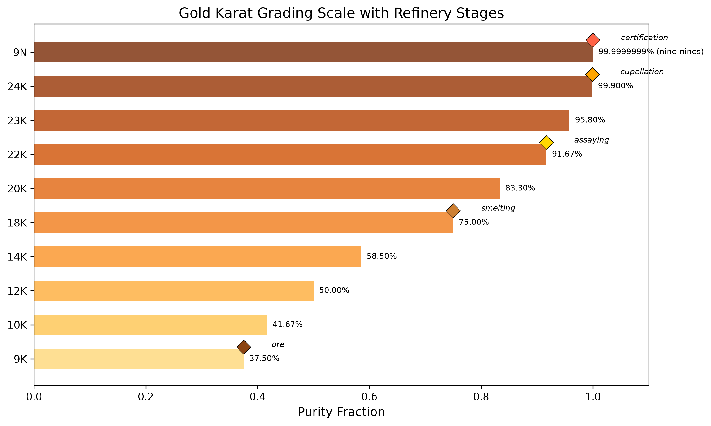
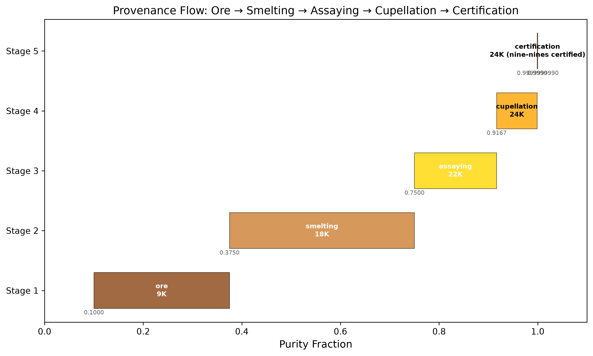
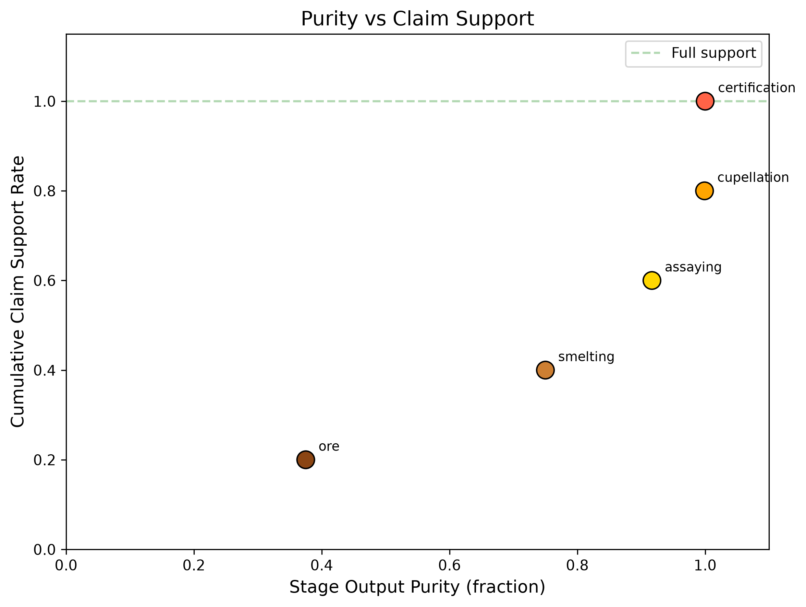

From Ore to Nine-Nines Purity via Mega-Madlib Token Injection
This paper presents a metallurgical analogy for scientific manuscript composition, mapping gold-refining stages onto the template infrastructure pipeline. The refinery processes manuscript ore through 5 stages — from raw draft (9K, ~37.5% purity) through smelting, assaying, and cupellation — to nine-nines certification (99.9999999%), the ultra-high-purity standard of electronics-grade gold.
The analogy is load-bearing, not merely rhetorical: each metallurgical stage corresponds to a real template-infrastructure operation. Smelting removes dross (filler, unsupported claims); assaying tests claims against evidence; cupellation resolves cross-references; certification validates the full pipeline. The mega-madlib token engine selects 8 domain tokens deterministically via seeded SHA-256 digest over category inventories, ensuring every prose element is traceable and reproducible.
Results: The refinery achieves final purity of 99.9999999% (nine-nines) (24K (nine-nines certified)) with a total purity gain of 90.00% across all stages. Nine-nines certification: Yes. The purity progression is shown in fig. 1, and the karat grading scale in fig. 2.
Keywords: gold refining, manuscript composition, mega-madlib, token injection, scientific purity, assaying, karat grading
Gold refining is one of humanity’s oldest purification technologies. From ancient cupellation to modern nine-nines electrolysis, the process of separating noble metal from base ore has evolved into a rigorous, staged pipeline with measurable purity at every step. This paper asks: can that pipeline serve as a load-bearing operational model for scientific manuscript composition — not merely a decorative analogy, but a real mapping from metallurgical stages to template-infrastructure operations?
A scientific manuscript accumulates impurities through its drafting lifecycle: unsupported claims, unresolved references, redundant prose, and citation gaps. The template repository provides infrastructure to detect and remove these impurities — validation gates, cross-reference checks, evidence registries, and coverage enforcement. What it lacks is a unifying model that names the purification stages and measures purity progression.
We map five gold-refining stages onto manuscript operations:
Each stage has a metallurgical operation, a manuscript operation, an
input purity, and an output purity. Purity increases monotonically — a
constraint enforced by
src/refinery.py::assert_monotone_increase and tested in
tests/test_refinery.py.
The manuscript’s domain vocabulary is not hand-authored prose but config-owned lexical data, selected deterministically by a seeded SHA-256 digest. The engine generates 8 tokens across 4 slots and 4 lexicon categories. Every token choice is reproducible, traceable to its config key, and bound to a manuscript section.
Is the analogy load-bearing or rhetorical? We assert it is both: it frames the methods paper (rhetorical) and operationalizes each stage against real infrastructure (load-bearing). The open question is not whether to use the analogy, but where the mapping breaks — a question the discussion addresses.
The refinery pipeline consists of 5 canonical stages, each mapping a
metallurgical operation to a manuscript-composition operation. The
pipeline is implemented in src/refinery.py and validated by
src/purity.py.
| # | Stage | Output purity | Karat | Metallurgical operation |
|---|---|---|---|---|
| 1 | ore | 37.50% | 9K | Extract raw gold-bearing ore from the earth |
| 2 | smelting | 75.00% | 18K | Heat ore to separate gold from slag and dross |
| 3 | assaying | 91.67% | 22K | Test a sample to determine gold content and impurities |
| 4 | cupellation | 99.900% | 24K | Refine by blowing air through molten lead-gold alloy |
| 5 | certification | 99.9999999% (nine-nines) | 24K (nine-nines certified) | Certify purity grade and stamp hallmark |
The purity sequence across all stages is: 0.100000, 0.375000, 0.750000, 0.916700, 0.999000, 1.000000
Purity is strictly increasing — enforced by
assert_monotone_increase() which raises
ValueError if any stage’s output purity does not exceed its
input. Formally, for stages \(s_1, \ldots,
s_n\) with input purity \(p_{\text{in}}^{(i)}\) and output purity
\(p_{\text{out}}^{(i)}\):
\[ p_{\text{out}}^{(i)} > p_{\text{in}}^{(i)} \quad \text{and} \quad p_{\text{in}}^{(i+1)} = p_{\text{out}}^{(i)} \quad \forall i \in \{1, \ldots, n-1\} \]
The full purity progression is shown in fig. 1 (see sec. 4).
The mega-madlib engine selects tokens from config-owned lexicon categories using a deterministic digest:
\[ \text{index} = \text{int}\left(\text{SHA-256}\left(\text{seed} \mid \text{slot} \mid \text{category} \mid \text{ordinal} \mid \text{inventory}\right)[:12], 16\right) \mod n \]
where \(n\) is the size of the lexicon category inventory. Selected metallurgical terms: hallmark, cupellation, assaying. Selected manuscript terms: evidence, evidence.
| Category | Count | Sample |
|---|---|---|
| manuscript_terms | 5 | draft, claim, citation… |
| metallurgical_terms | 5 | cupellation, assaying, smelting… |
| purity_adjectives | 5 | unrefined, purified, certified… |
| refinement_verbs | 5 | assaying, certifying, refining… |
Karat grades map purity fractions to standard gold fineness:
The mapping is implemented in
src/purity.py::karat_for_purity(). The karat grading chart
is shown in fig. 2 (see sec. 4).
| Phase | Input | Transformation | Output | Guard |
|---|---|---|---|---|
| Schema intake | manuscript/config.yaml | Load and validate gold_refinement block | GoldRefinementConfig | config schema tests |
| Refinery execution | GoldRefinementConfig | Run five refinery stages with monotone purity | RefineryResult | monotone purity test |
| Token planning | GoldRefinementConfig | Expand slots into deterministic token choices | TokenPlan | seed-stability tests |
| Figure generation | RefineryResult and TokenPlan | Generate purity progression, karat grading, and token density figures | ../figures/*.png | nonblank figure tests |
| Manuscript hydration | manuscript shells and manuscript_variables.json | Resolve {{TOKEN}} placeholders into output/manuscript/ | hydrated Markdown manuscript | unresolved-token scan |
| Render and validate | output/manuscript | Render PDF, HTML through shared template pipeline | output/pdf and output/web | render command |
The refinery pipeline produces a monotonically increasing purity sequence across 5 stages, reaching final purity of 99.9999999% (nine-nines) (24K (nine-nines certified)).
| Stage | Name | Output purity | Karat | Gain |
|---|---|---|---|---|
| 1 | ore | 37.50% | 9K | Extract raw gold-bearing ore from the earth |
| 2 | smelting | 75.00% | 18K | Heat ore to separate gold from slag and dross |
| 3 | assaying | 91.67% | 22K | Test a sample to determine gold content and impurities |
| 4 | cupellation | 99.900% | 24K | Refine by blowing air through molten lead-gold alloy |
| 5 | certification | 99.9999999% (nine-nines) | 24K (nine-nines certified) | Certify purity grade and stamp hallmark |

The mega-madlib engine generated 8 tokens from seed 431 across 4 lexicon categories.

| Category | Count |
|---|---|
| manuscript_terms | 2 |
| metallurgical_terms | 3 |
| purity_adjectives | 2 |
| refinement_verbs | 1 |
| Section | Token count |
|---|---|
| discussion | 1 |
| methodology | 5 |
| results | 2 |
| Variable | Category | Value | Section | Source |
|---|---|---|---|---|
| DISCUSSION_REFINEMENT_VERB | refinement_verbs | smelting | discussion | manuscript/config.yaml#gold_refinement.lexicon.refinement_verbs[3] |
| METHOD_MANUSCRIPT_TERM_1 | manuscript_terms | evidence | methodology | manuscript/config.yaml#gold_refinement.lexicon.manuscript_terms[4] |
| METHOD_MANUSCRIPT_TERM_2 | manuscript_terms | evidence | methodology | manuscript/config.yaml#gold_refinement.lexicon.manuscript_terms[4] |
| METHOD_METAL_TERM_1 | metallurgical_terms | hallmark | methodology | manuscript/config.yaml#gold_refinement.lexicon.metallurgical_terms[4] |
| METHOD_METAL_TERM_2 | metallurgical_terms | cupellation | methodology | manuscript/config.yaml#gold_refinement.lexicon.metallurgical_terms[0] |
| METHOD_METAL_TERM_3 | metallurgical_terms | assaying | methodology | manuscript/config.yaml#gold_refinement.lexicon.metallurgical_terms[1] |
| RESULTS_PURITY_ADJ_1 | purity_adjectives | unrefined | results | manuscript/config.yaml#gold_refinement.lexicon.purity_adjectives[0] |
| RESULTS_PURITY_ADJ_2 | purity_adjectives | purified | results | manuscript/config.yaml#gold_refinement.lexicon.purity_adjectives[1] |
Selected purity adjectives for this section: unrefined, purified.



| Claim | Statement | Evidence | Boundary |
|---|---|---|---|
| Five-stage refinery | The refinery pipeline has 5 canonical stages from ore to nine-nines. | src/refinery.py::CANONICAL_STAGES | local |
| Monotone purity | Purity increases strictly across all refinery stages. | src/refinery.py::assert_monotone_increase | local |
| Nine-nines certification | The certification stage achieves 99.9999999% purity. | src/purity.py::NINE_NINES_PURITY | local |
| Deterministic tokens | Token selection is deterministic via seeded SHA-256 digest. | src/composition.py::_choose_value | local |
The gold-refining analogy operates on two levels. Rhetorically, it provides a memorable framing for a methods paper: purity progression, karat grading, and certification are vivid metaphors for manuscript quality. Operationally, each stage maps to a real template-infrastructure operation — smelting to claim removal, assaying to evidence validation, cupellation to cross-reference resolution, and certification to full pipeline validation.
The analogy is smelting the manuscript: it performs the refinement it describes.
| Mode | Risk | Detection | Mitigation |
|---|---|---|---|
| Non-monotone purity | A stage has lower output purity than input. | assert_monotone_increase raises ValueError. | Fix stage purity targets in src/refinery.py. |
| Empty lexicon category | A required lexicon category is empty or missing. | Config validation raises GoldRefinementConfigError. | Add vocabulary to manuscript/config.yaml. |
| Unresolved token | A manuscript placeholder has no generated variable. | test_all_manuscript_tokens_are_generated fails. | Add variable in src/manuscript_variables.py. |
| Rhetorical-only analogy | The analogy is decorative with no operational mapping. | Review that each stage maps to a real infrastructure operation. | Connect stages to template pipeline operations. |
| Principle | Rationale |
|---|---|
| Analogy is load-bearing | Each metallurgical stage maps to a real template-infrastructure operation, not mere decoration. |
| Purity increases monotonically | The refinery pipeline guarantees strictly increasing purity from ore to certification. |
| Token selection is deterministic | A fixed seed and lexicon produce the same injection plan across reruns. |
| Configuration owns prose choices | Reviewers can inspect the declared language surface before generation. |
| Generated output is disposable | The durable artifact is the regeneration contract, not hand-edited output. |
The gold-refinery pipeline demonstrates that a metallurgical analogy can be load-bearing: each stage maps to a real template-infrastructure operation, purity increases monotonically, and the final stage achieves nine-nines certification (99.9999999% (nine-nines)).
manuscript/config.yamlThe refinery pipeline is fully deterministic. Given the same
manuscript/config.yaml and src/ code, every
run produces identical output.
| Category | Count |
|---|---|
| Figures | 6 |
| Data files | 2 |
| Reports | 9 |
| Total | 17 |
# Run the refinery analysis
uv run python projects/templates/template_gold_refinement/scripts/refinement_analysis.py
# Generate manuscript variables
uv run python projects/templates/template_gold_refinement/scripts/z_generate_manuscript_variables.py
# Full pipeline (from repo root)
./run.sh --project templates/template_gold_refinement --pipeline --core-onlyAll vocabulary, slots, and section conditions are declared in
manuscript/config.yaml under gold_refinement:.
The config is the source of truth; generated prose is disposable.
This exemplar demonstrates the gold-refining analogy as a methods paper. It does not claim:
The mega-madlib token injection pattern follows
template_madlib’s deterministic lexical composition
approach. The pipeline-staging model draws on
template_code_project’s thin-orchestrator pattern. The
refinement analogy is novel to this exemplar but builds on the template
repository’s existing validation and rendering infrastructure.
A fork must:
| Probe | Question | Passing signal | Artifact |
|---|---|---|---|
| Monotone purity | Does purity increase strictly across all refinery stages? | assert_monotone_increase passes on the purity sequence. | src/refinery.py and output/data/refinery_results.json |
| Token provenance | Can every selected token be traced to a category, section, value, and config key? | The token plan contains one row for each generated token. | output/reports/token_plan.json |
| Karat grade correctness | Does each stage map to the correct karat grade? | karat_for_purity returns the expected grade for each stage. | src/purity.py |
| Rule | Check | Test |
|---|---|---|
| Purity monotonicity | Purity must strictly increase from stage to stage | tests/test_refinery.py |
| Token determinism | Same seed and lexicon must produce same token plan | tests/test_composition.py |
| Token coverage | Every manuscript {{TOKEN}} must have a generated variable | tests/test_manuscript_variables.py |
| Config validation | Invalid config must raise GoldRefinementConfigError | tests/test_config.py |
| Figure generation | All figure generators must produce non-blank PNGs | tests/test_figures.py |
| Obligation | Requirement |
|---|---|
| Domain validator | Add domain-specific evidence before making domain claims beyond the exemplar. |
| Config ownership | Keep lexicon and slots in config.yaml, not in generated prose. |
| Regeneration contract | Regenerate outputs through the pipeline, not by hand-editing. |
Remap metallurgical stages to domain operations in
src/refinery.py
Update lexicon categories in manuscript/config.yaml
under gold_refinement.lexicon
Update contribution_claims with domain-specific
evidence pointers
Add domain validators beyond the exemplar’s generic gates
Regenerate all outputs through the pipeline:
uv run python scripts/refinement_analysis.py
uv run python scripts/z_generate_manuscript_variables.pyDo not hand-edit generated manuscript, PDFs, or figures